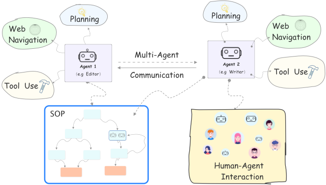
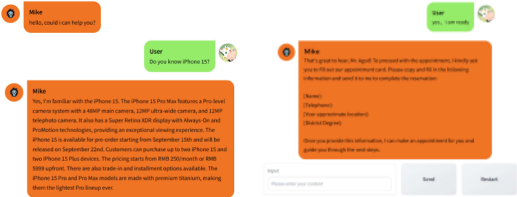
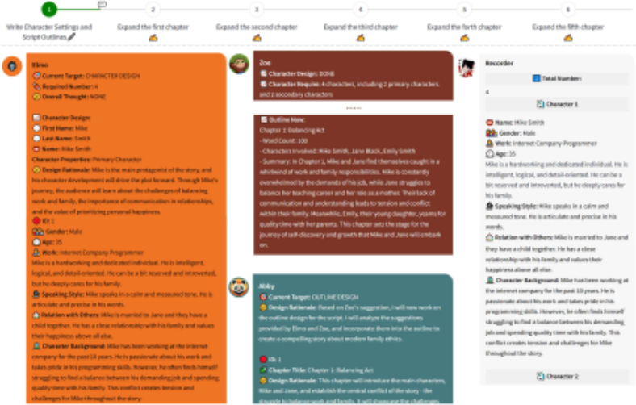
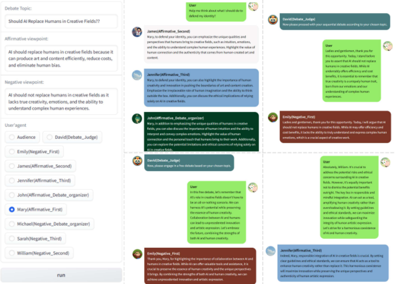

Agents：面向自主语言 Agent 的开源框架
现有 LLM Agent 开源项目（如 AutoGPT、BabyAGI）多为概念验证，难以定制、调优与部署，且多数框架仅覆盖 Agent 部分核心能力，完全依赖 LLM 依据简短任务描述自主规划，导致不同运行之间随机性大、结果不一致。论文发布开源框架 AGENTS，以 Agent、Environment、SOP 三个核心类组织（多）Agent 系统，通过纯文本配置文件定义并将复杂 prompt 因子化为模块化组件，内置长短期记忆（VectorDB 语义检索 + scratchpad）、工具调用与网页导航、多 Agent 动态调度与人机交互。其核心创新是用符号化计划 SOP（状态图 + 状态转移规则）对 Agent 行为做细粒度控制，使行为更稳定可预测、便于调优，并提供基于 RAG 的自动 SOP 生成 'meta agent' 降低配置成本。论文未报告量化实验，仅以客服、销售、小说工作室、辩论、软件公司等案例演示框架能力。对团队而言，SOP 可控执行、模块化 prompt 组件与动态调度等设计模式可直接借鉴到内部 Agent 工程实践中。
现有语言 Agent 的 demo 与开源仓库（AutoGPT、BabyAGI、SuperAGI 等）多为概念验证，不便于定制、调优与部署；多数框架只覆盖任务分解、长短期记忆、网页导航、工具使用、多 Agent 通信等核心能力的一部分；且现有框架仅靠简短任务描述、完全依赖 LLM 自主规划与行动，导致显著的随机性与跨运行不一致，用户体验差且难以调优。
提出开源库 AGENTS：以 Agent、Environment、SOP 三个核心类组织（多）Agent 系统，全部由纯文本配置文件初始化，并将复杂 prompt 因子化为模块化 PromptComponent（任务/目标、规则/约束、in-context learning 示例、输出格式）与 ToolComponent（外部工具/API，复杂工具借助 OpenAI GPT 的 Function-calling 由 LLM 决定调用方式）。关键特性包括：长期记忆（动作历史经 sentence-transformers 嵌入存入 VectorDB、语义检索）加短期工作记忆（自然语言 scratchpad，由 LLM 经调优 prompt 更新）；将 web 搜索/导航抽象为专用 API 的工具使用；由 LLM 控制器综合历史动作、环境与当前状态目标动态决定下一个行动 Agent 的 'dynamic scheduling'；通过 _is_human 字段让人接管某个 Agent 角色的人机交互；以及核心的符号化计划 SOP——用状态图定义子任务、状态间转移规则及每个状态的 prompt 与工具，实现细粒度行为控制。另提供基于 RAG 的自动 SOP 生成流水线（meta agent）、FastAPI API 化部署与 Agent Hub 共享平台。
未在论文中说明
相对 LangChain、Transformers Agents、Camel、AgentVerse、Gentopia 等已有框架，论文称 AGENTS 是唯一同时支持工具使用、长短期记忆与多 Agent 通信的框架，并首次提供人机交互与基于符号计划（SOP）的可控性；用 LLM 控制器动态调度替代多数多 Agent 框架硬编码的固定行动顺序；以单一配置文件因子化 prompt 降低非专家的构建门槛；并用基于 RAG 的 meta agent 自动生成 Agent 系统配置以减少手工编写 SOP 的工作量。
相关度级别：high
命中能力域：3.1 上下文工程与记忆 | 3.2 提示工程 | 3.3 Agent 架构与工具使用 | 3.4 多智能体协作 | 3.5 评测与可靠使用
理由：该论文是与团队核心工作直接对应的 Agent 框架工作：Agent/Environment/SOP 三类抽象与主循环即 3.3 的 Agent loop 与 harness 设计，ToolComponent + Function-calling 对应工具调用，SOP 符号计划直接针对单 Agent 执行可靠性（行为稳定/可预测、便于调优）；多 Agent dynamic scheduling 与 _is_human 人在回路对应 3.4；VectorDB 长期记忆、scratchpad 短期记忆与 RAG 生成 SOP 对应 3.1；配置文件中模块化 prompt 组件（任务/规则/示例/输出格式）对应 3.2 的提示词资产管理与复用；人机协作工作流与行为可控性亦触及 3.5 的可靠使用。不足在于论文没有任何评测基准或量化对比，3.5 的评测方法学部分需团队自行补齐。
建议动作：深入精读并做内部分享
arXiv:2309.07870v3 [cs.CL] 2023年12月12日
Agents：面向自主语言 Agent 的开源框架
Wangchunshu Zhou 1 ∗ Yuchen Eleanor Jiang 1* Long Li 1* Jialong Wu 1* Tiannan Wang 1 Shi Qiu 1 Jintian Zhang 1 Jing Chen 1 Ruipu Wu 1 Shuai Wang 1 Shiding Zhu 1 Jiyu Chen 1 Wentao Zhang 1 Xiangru Tang Ningyu Zhang 2 Huajun Chen 2 Peng Cui 3 Mrinmaya Sachan 3
AIWaves Inc. 2 浙江大学 3 苏黎世联邦理工学院（ETH Zürich）
大型语言模型（LLMs）的最新进展使研究人员和开发者能够构建自主语言 Agent，这类 Agent 能够自动解决各种任务，并通过自然语言接口与环境、人类以及其他 Agent 进行交互。我们认为语言 Agent 是迈向通用人工智能的一个有前景的方向，并发布了 AGENTS——一个开源库，其目标是让更广泛的非专业受众也能接触到这些进展。AGENTS 经过精心设计，支持多项重要特性，包括规划、记忆、工具使用、多智能体通信以及细粒度的符号控制。AGENTS 对用户十分友好，它使非专业人员无需大量编码即可构建、定制、测试、调优并部署最先进的自主语言 Agent。该库同样对研究友好，其模块化设计使研究人员能够轻松地对其进行扩展。AGENTS 可从 https://github.com/aiwaves-cn/agents 获取。
“自主 Agent（autonomous agent）是一个身处环境之中并构成环境一部分的系统，它随时间推移感知环境并作用于环境，以追求自身的议程，并对其未来所感知到的事物施加影响。”
Is it an Agent, or just a Program?: A Taxonomy for Autonomous Agents [Franklin and Graesser, 1996]
诸如 ChatGPT 这样的大语言模型（LLMs）[Brown et al., 2020, Ouyang et al., 2022, OpenAI, 2023] 使得构建能够自动解决复杂任务的自主 Agent 成为可能，这类 Agent 可以通过在世界中感知、推理、规划和行动，与环境、人类或其他 Agent 进行交互 [Weng, 2023]。语言 Agent 是迈向通用人工智能（AGI）的充满前景的一步，并且能够在客户服务、咨询、编程、写作、教学等特定角色中帮助减少人力投入。近期的一些演示，如 AutoGPT [Richards and et al., 2023] 和 BabyAGI [Nakajima, 2023]，展示了语言 Agent 的潜力，并引发了开发者、研究人员以及更多非技术受众的极大兴趣。
尽管颇具吸引力，但即便是经验丰富的开发者或研究人员，这些演示或代码仓库中的大多数也不便于定制、调优和部署新的 Agent。这一局限源于如下事实：这些演示通常只是展示语言 Agent 可能性的概念验证，而非可用于持续构建和定制语言 Agent 的更大规模框架。此外，这些开源仓库中的大多数仅涵盖语言 Agent 核心能力的一小部分，包括任务分解 [Nye et al., 2022]、长短期记忆 [Zhou et al., 2023a]、网页导航 [Nakano et al., 2021]、工具使用 [Schick et al., 2023] 以及多智能体通信 [Foerster et al., 2016]。另外，大多数（即便不是全部）现有的语言 Agent 框架仅依赖一段简短的任务描述，并完全依赖 LLM 的能力来进行规划和行动。这导致不同运行之间存在显著的随机性和不一致性，带来不尽如人意的用户体验，并使语言 Agent 难以定制和调优。
∗ 同等贡献。通讯作者：chunshu@aiwaves.cn
预印本。研究进行中。

我们认为，上述局限是语言 Agent 领域的最新进展触达更广泛的非专业受众、并以积极方式影响我们社会的重要障碍。为此，我们发布了 AGENTS，一个面向语言 Agent 的开源库与框架，致力于支持由 LLM 驱动的语言 Agent。AGENTS 的理念是让定制、调优和部署语言 Agent 尽可能简单，即便对非专业人员也是如此，同时对开发者和研究人员而言仍保持易于扩展。此外，该库还提供了以下关键特性，使其成为一个通用的语言 Agent 框架：
长短期记忆 根据 Franklin 和 Graesser [1996] 的观点，自主 Agent 与计算机程序（或机器学习模型）之间的一个关键区别在于：机器学习模型只需响应单个输入/查询，而自主 Agent 需要随时间推移与环境或其他 Agent 进行交互。因此，维护长短期记忆的能力对自主 Agent 而言非常重要。AGENTS 集成了 [Zhou et al., 2023a] 中的记忆组件，使语言 Agent 能够借助 VectorDB 和语义搜索来存储和检索长期记忆，并通过 scratchpad 定期更新短期工作记忆。用户只需在 config 文件中填写一个字段，即可选择为 Agent 配备长期记忆、短期记忆或两者兼有。
工具使用与网页导航 自主 Agent 的另一项重要特性是使用外部工具和浏览互联网的能力。这对语言 Agent 尤为重要，因为它们依赖于语言接口，因而需要借助外部工具与语言交流之外的环境进行交互，并浏览网页以收集有用信息。遵循 [Patil et al., 2023]，AGENTS 支持若干常用的外部 API，并提供了一个抽象类，使开发者能够轻松集成其他工具。我们还将网络搜索（web search）和网络导航（web navigation）定义为专用 API，从而使 Agent 能够浏览互联网并收集信息。
多智能体通信 除单 Agent 能力之外，AGENTS 还支持自定义多智能体系统，这对某些应用（如游戏 [Park et al., 2023]、社会实验 [Li et al., 2023]、软件开发 [Qian et al., 2023] 等）可能很有帮助。AGENTS 在多智能体通信方面的一项新特性是“动态调度”（dynamic scheduling）特性。动态调度并非通过硬编码规则来安排 Agent 行动的顺序，而是提供了一种选项，允许定义一个充当“主持人”（moderator）的控制器 Agent，由其根据各 Agent 的角色和当前历史记录来决定由哪个 Agent 执行下一个动作。动态调度有望使多个 Agent 之间的通信更加自然和灵活。开发者只需在 config 文件中用自然语言指定控制器的规则，即可轻松对其进行定制。
人-Agent 交互 现有 Agent 框架的一个局限在于：尽管它们使 Agent 或多 Agent 能够自动解决任务，但人类用户却难以甚至无法与这些 Agent 进行交互，在多 Agent 场景中尤其如此。AGENTS 在单 Agent 和多 Agent 两种场景下都无缝支持人-Agent 交互，使一个或多个人类能够与语言 Agent 进行通信和交互。
可控性：现有的 Agent 框架通常仅使用系统提示（system prompt）来定义和控制 Agent 的行为，然后让 Agent 自行规划与行动。相比之下，AGENTS 提供了一种新颖的范式，通过符号化规划（symbolic plan）——也称为标准操作程序（standard operating procedures, SOPs）——来构建可控的 Agent。SOP 是一个由多个状态构成的图，它定义了 Agent 在完成任务过程中可能遇到的各种情形，以及状态之间的转换规则。与现实世界中的 SOP 类似，AGENTS 中的 SOP 是一套记录详尽的分步指令，概述了某项特定任务或流程应当如何由一个 Agent 或一组 Agent 来执行。SOP 可由大语言模型（LLM）生成，并在用户定制和调优 Agent 时由用户进行编辑。部署之后，Agent 将遵循针对每个状态所指定的指令和准则来行事，并根据其与环境、人类或其他 Agent 的交互动态调整其当前状态。符号化规划的引入为对 Agent 行为进行细粒度控制提供了机会，使 Agent 的行为更加稳定/可预测，同时也便于对 Agent 进行调优/优化。
此外，我们提出了一种自动化 SOP 生成流水线，以减少在定制（多）Agent 系统时编写详细 SOP 和配置文件的人力投入。该自动化 SOP 生成流水线是一个“元 Agent”（meta agent），在仅给定任务简短描述的情况下，它能够借助检索增强生成（RAG）为语言 Agent 生成配置文件。
AGENTS 是一项由来自 AIWaves 2 的研究人员和工程师维护的持续性工作。我们期待社区贡献者对该项目的支持。该库以及详细的文档和教程可在 GitHub 3 上获取。
语言 Agent 的概念近来变得非常流行，针对不同任务的各种语言 Agent 相继被提出。例如，Generative Agents [Park et al., 2023] 开发了用于模仿人类社会行为的语言 Agent；WebAgent [Gur et al., 2023] 展示了构建能够遵循自然语言指令在真实网站上完成任务的语言 Agent 的可能性；Qian et al. [2023] 和 MetaGPT [Hong et al., 2023] 在多智能体通信环境下对软件开发进行了实验；Zhou et al. [2023a] 则构建了充当交互式写作助手的语言 Agent。
除了面向特定任务的语言 Agent 之外，近期的开源项目，如 AutoGPT [Richards and et al., 2023]、BabyAGI [Nakajima, 2023] 和 SuperAGI [SuperAGI, 2023]，都以构建能够完成用户所期望的任何任务的自主 Agent 为目标，并吸引了开发者与非专业受众的极大兴趣。
更近期，一些面向语言 Agent 的开源框架相继被提出。例如，Transformers Agents [Wolf et al., 2020] 构建能够自动使用工具来解决以自然语言描述的任务的语言 Agent；LangChain [LangChain, 2022] 支持能够自动完成以自然语言指定的任务的端到端语言 Agent；Camel [Li et al., 2023] 和 AgentVerse [Chen et al., 2023] 是专为构建多智能体系统而打造的平台；Gentopia [Xu et al., 2023] 和 XLang 4 则是用于构建工具增强型 Agent 的库。我们在表 1 中展示了这些平台以及 AGENTS 所支持的关键特性。可以看出，AGENTS 是唯一一个同时支持工具调用、长短期记忆和多智能体通信的框架。此外，AGENTS 还首次提供了人与 Agent 的交互，以及通过符号化计划（SOPs）实现的可控性。
2 https://www.aiwaves.org/
3 https://github.com/aiwaves-cn/agents
3
| Framework | Tool Usage | Long-short Term Memory | Multi-Agent | Human-Agent Interaction | Symbolic Control |
|---|---|---|---|---|---|
| Transformers Agents | ✓ | ✗ | ✗ | ✗ | ✗ |
| LangChain | ✓ | ✓ | ✗ | ✗ | ✗ |
| Auto-GPT | ✓ | ✗ | ✗ | ✗ | ✗ |
| Gentopia | ✓ | ✗ | ✗ | ✗ | ✗ |
| XLang | ✓ | ✗ | ✗ | ✗ | ✗ |
| Meta-GPT | ✓ | ✗ | ✓ | ✗ | ✗ |
| Camel | ✓ | ✗ | ✓ | ✗ | ✗ |
| AgentVerse | ✓ | ✓ | ✓ | ✓ | ✗ |
| AGENTS | ✓ | ✓ | ✓ | ✓ | ✓ |
| Framework | Tool Usage | Long-short Term Memory | Multi-Agent | Human-Agent Interaction | Symbolic Control |
1 def main() 2 # agents is a dict of one or multiple agents. 3 agents = Agent.from_config("./config.json") 4 sop = SOP.from_config("./config.json") 5 environment = Environment.from_config("./config.json") 6 run(agents ,sop,environment)
AGENTS 的设计遵循 Franklin and Graesser [1996] 所提出的理念：“自主 Agent 处于某一环境之中”。因此，Agent 和环境是 AGENTS 框架中的两个主要类。除这两个类之外，我们还引入了一个用于符号化计划的类，命名为 SOP（Standard Operating Procedure 的缩写，即标准操作规程），以使语言 Agent 更加可控。这些主要类均从一个配置文件初始化，该配置文件可以用纯文本填写。总而言之，使用 AGENTS 初始化并运行一个（多）Agent 系统的典型脚本如代码 1 所示。配置文件不仅定义了这些核心对象，还将复杂的提示分解为模块化的提示组件。这种提示分解显著降低了用户构建（多）Agent 系统所需的专业知识要求和工作量。使用单一配置文件来定义 Agent、计划和基本环境，也便于语言 Agent 的共享（这将在 Agent Hub 一节中讨论）。这三个核心类各自由标准化的 API 组成，有经验的开发者和研究人员可以对其进行重写。下面我们详细描述这些类：
1 def run(agents ,sop,environment): 2 while not sop.finished: 3 agent ,state=sop.step(agents , environment) 4 action=agent.step(state,environment) 5 environment.update(agent,action) 6 # optional , in case of dynamic planning 7 # new_states = get_new_states(action) 8 # sop.add_states(new_states)
4 https://github.com/xlang-ai/xlang
Agent 类对语言智能体进行了抽象。其统一建模语言（UML）如图 1 所示。我们可以看到，一个智能体会维护其长短期记忆，并具有观察环境 ( agent._observe(environment) )、根据其当前状态采取行动 ( agent._act() ) 以及更新其记忆 ( agent._update_memory() ) 的方法。所有这些方法都被封装在 agent.step() 方法中。这种分解方式使开发者能够轻松地定制带有新功能的智能体。与现有那些假设智能体必须基于大语言模型（LLM）的语言智能体框架不同，我们为智能体加入了 ' _is_human ' 属性。如果该属性被设置为 ' True '，( agent._act() ) 将会选择向人类用户提供观测信息和记忆信息，并等待人类用户输入动作。通过允许人类用户扮演一个或多个语言智能体的角色，这种设计使得在单智能体系统和多智能体系统中都能实现灵活的人-智能体交互。这有助于开发者构建各种有趣的应用，例如让人类用户在辩论中充当团队的一员，与（基于智能体或人类的）队友协作以击败另一支队伍，或者在软件公司中担任首席技术官（CTO）/工程师，与他人协作进行软件开发。
标准操作程序（SOP）类包含一个由智能体状态构成的图。每个状态规定了所有智能体在完成 SOP 所描述任务时的某个特定子任务或子目标。状态被抽象为一个 State 类。State 对象包含模块化的提示，供智能体借助大语言模型（LLM）完成任务，还包含智能体在该状态下可以使用的各种工具或 API。我们将智能体在某个状态下执行动作时可能使用的一切抽象为一个 'Component' 类。Component 类由两个子类组成，分别对应提示的不同部分以及工具或外部 API，分别命名为 'PromptComponent' 和 'ToolComponent'。PromptComponent 包含规定任务/目标、规则/约束、用于上下文学习（in-context learning）的（分步）示例演示以及输出格式的模块化提示。ToolComponent 支持超出模块化提示的更复杂用法，包括网络搜索、知识库等外部工具和 API。根据配置文件，工具的结果要么被包含在提示中，要么被直接返回并在之后进行处理。
SOP 对象还包括一个基于 LLM 的控制函数，用于决定不同状态之间的转换以及下一个执行动作的智能体。状态转换函数命名为 sop._transit()，智能体路由函数命名为 sop._route()。这两个函数都被封装在一个 sop.next() 函数中，该函数在主循环中使用。

Environment 类对智能体所处的环境进行了抽象。一个环境由两个主要函数组成：environment._observed() 和 environment.update()。environment._observed() 定义了环境如何影响智能体的动作（即观察时应向智能体传递哪些信息），而 environment.update() 则定义了智能体的动作如何影响环境。

基于 AGENTS 的（多）智能体系统的执行逻辑非常直观。如代码 2 所示，在每次迭代中，SOP 首先根据智能体和环境决定状态转换，并选择下一个执行动作的智能体。随后，该智能体根据其自身状态和环境采取一个动作。接着，环境根据新的动作进行自我更新。最后，如果某个工作流需要根据中间执行结果动态调整计划，可以解析某个动作的输出，定义一个新状态并将其加入当前的 SOP 中。
长短期记忆：AGENTS 遵循 Zhou et al. [2023a] 的方法为语言智能体实现了长短期记忆。具体而言，长期记忆即动作历史，通过 sentence-transformers [Reimers and Gurevych, 2019] 进行嵌入，存储在 VectorDB 中，并通过语义搜索进行查询。短期记忆（也称工作记忆）以自然语言形式存在，由大语言模型（LLM）通过一个精心调优的提示进行更新。
工具使用与网页导航：AGENTS 通过 ToolComponents 支持工具使用和网页导航。对于每个外部工具或 API，开发者可以将 API 调用封装在 ToolComponent.func() 方法中。对于 API 调用依赖于上下文的复杂工具，AGENTS 集成了 OpenAI GPT API 的 'Function-calling'（函数调用）特性，让 LLM 决定如何使用这些工具。网页导航则通过将网络搜索实现为一种专用工具来实现。
多智能体通信：与大多数现有多智能体系统框架使用预定义规则（例如让每个智能体按顺序依次行动）来控制智能体行动顺序不同，AGENTS 包含一个控制器函数，该函数利用 LLM，综合考虑之前的动作、环境以及当前状态的目标，动态决定由哪个智能体执行下一个动作。这使得多智能体通信更加灵活。
人-智能体交互：AGENTS 通过允许人类用户将配置文件中某个智能体的 ' is_human ' 字段改为 ' True '，从而支持多智能体系统中的人-智能体交互。在这种情况下，用户可以亲自扮演该智能体的角色，输入自己的动作，并与环境中的其他语言智能体进行交互。
6

现有的语言智能体开源框架主要专注于构建在终端或 Gradio [Abid et al., 2019] 上运行的概念验证（proof-of-concept）语言智能体。相比之下，AGENTS 支持使用 FastAPI 5 将语言智能体部署为 API。这极大地便利了开发者将语言智能体集成到实际应用中。
AGENTS 旨在不仅促进语言智能体系统的开发、测试和调优，还使语言智能体的分发与共享变得更加容易。为此，我们推出了 AGENT HUB，这是一个允许用户分享其微调后的语言智能体，以及搜索/下载其他用户在该平台上分享的实用语言智能体的平台。通过这种方式，用户可以从社区智能体出发并稍加修改，从而轻松定制语言智能体。这大大降低了从零开始设计、测试和调优语言智能体的工作量。
随后，我们展示了几个使用该库构建的不同语言智能体的案例研究，包括单智能体系统、多智能体系统以及需要人-智能体交互的系统。所有演示均可在 http://www.aiwaves-agents.com/ 获取。
我们使用 AGENTS 实现了若干单智能体系统，包括一个闲聊机器人、两个分别基于知识库和网络搜索引擎的客户服务智能体、一个购物助手智能体以及一个销售智能体。这些智能体展示了该库的不同特性，以及使用 AGENTS 构建面向不同应用场景的语言智能体的可能性。我们在图 2 和图 3 中分别展示了客户服务智能体和销售智能体的截图。
我们还演示了如何构建一个由多个智能体在环境中彼此交互组成的多智能体（multi-agent）系统。我们选取了三个场景，包括小说工作室、辩论和软件公司。这些场景既包含合作场景，也包含竞争场景，而这两者正是多智能体系统的两大主要类别。所有场景都包含多个子任务，这些子任务通过符号化计划（symbolic plans），即标准操作流程（SOP）加以控制。人们可以方便地观察语言智能体在每个子任务中的行为，并对相应的提示（prompt）进行工程化设计，从而定制和改进系统。我们在图 4 中展示了小说工作室系统的系统截图。我们还在图 5 所示的案例研究中展示了该框架的人类与智能体交互特性，在该案例中，一名人类用户与语言智能体共同参与了一场辩论。
大语言模型（LLM）及其驱动的语言智能体（language agent）在自然语言处理/人工智能（NLP/AI）社区乃至整个社会中都扮演着日益重要的角色。AGENTS 是一个面向语言智能体的统一框架和开源库。AGENTS 旨在帮助开发者基于语言智能体构建应用程序，帮助研究人员开展语言智能体研究，并帮助普通非技术用户构建和定制个性化的语言智能体。